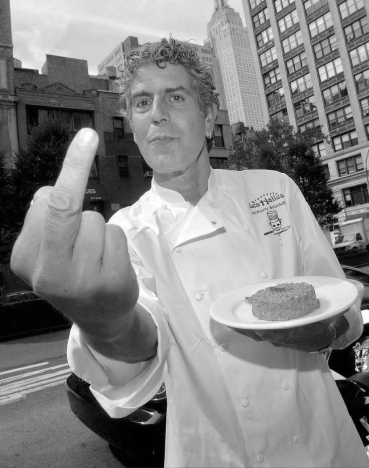
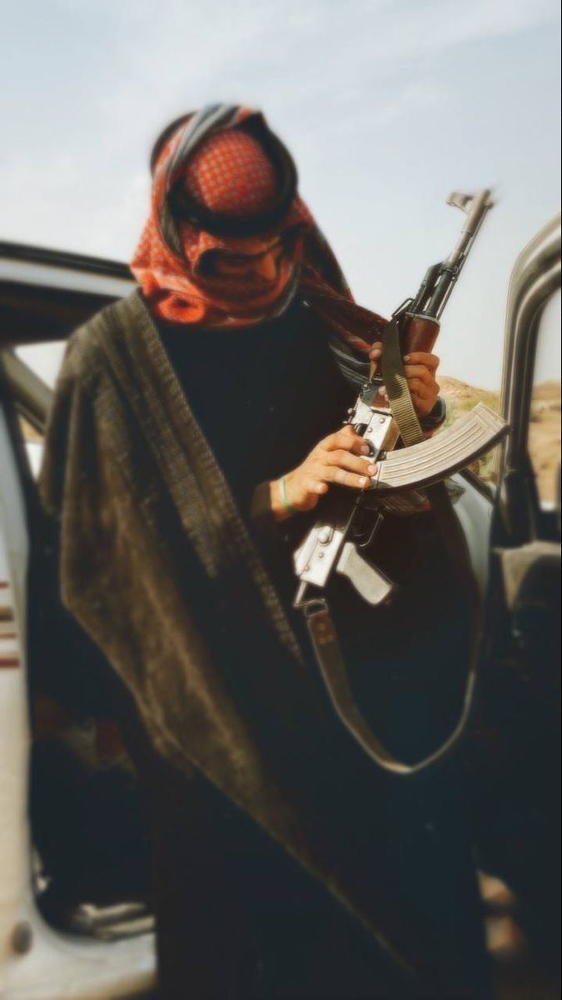
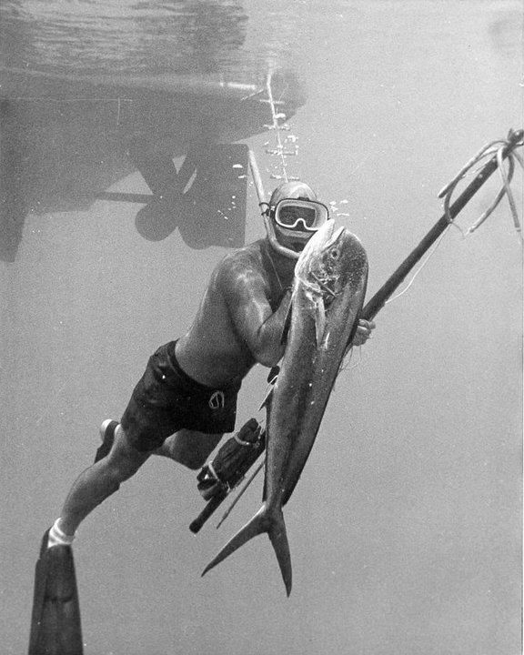
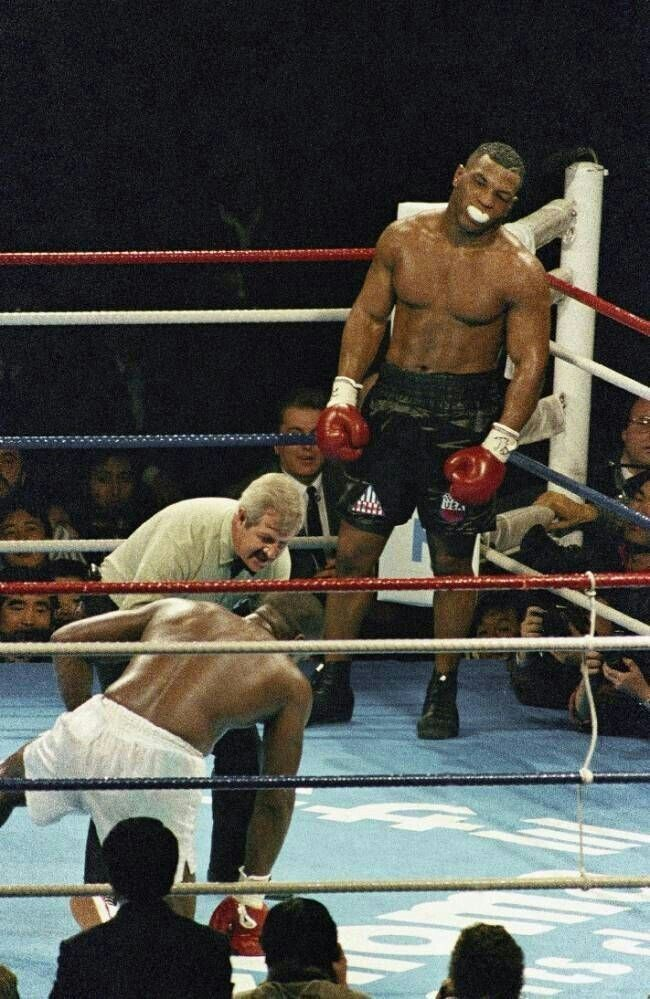
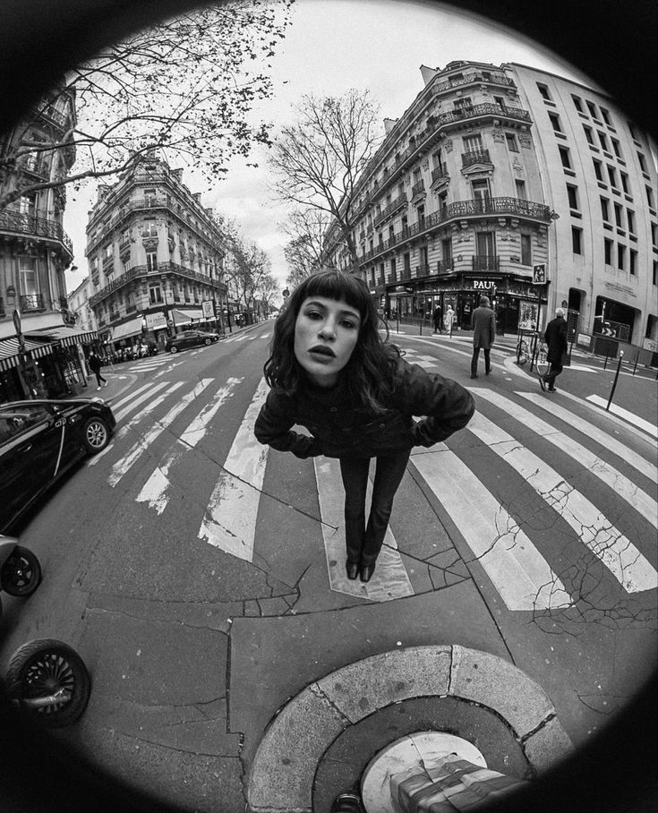
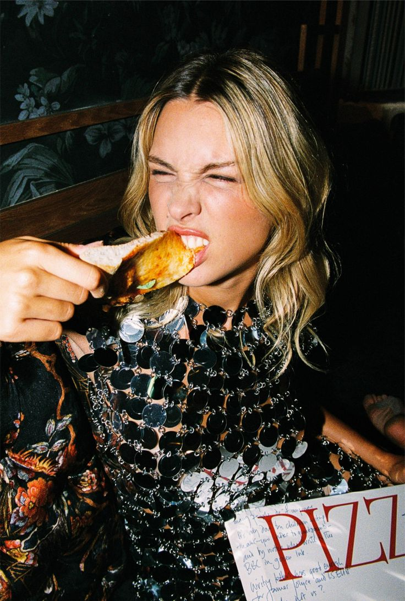
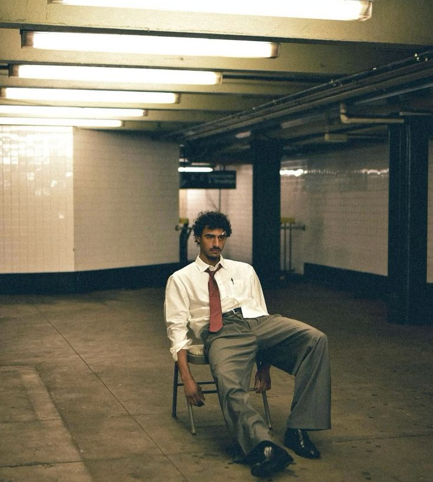
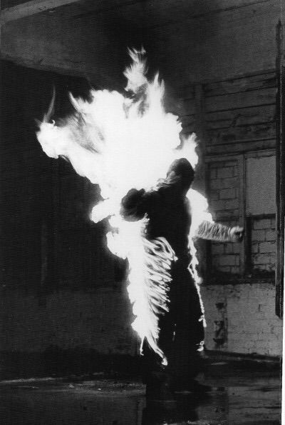

Issue 01 — Feral / Calm
The Gallery
Ten photographs. Ten sentences. Swipe, drag or use the arrow keys to sift through them. Hover or tap one and watch it develop.
01 / 10

Not angry. Honest.

Shoot first, ask questions later.

It saw you first.

Calm is a muscle.

Distortion is just closeness.

The road doesn’t ask where you’re going.
Some things were here before the question.

Everyone left. The light stayed.

Unbothered.

Everyone moved. One of them didn’t.
Read it differently?
Your sentence might be better than ours.